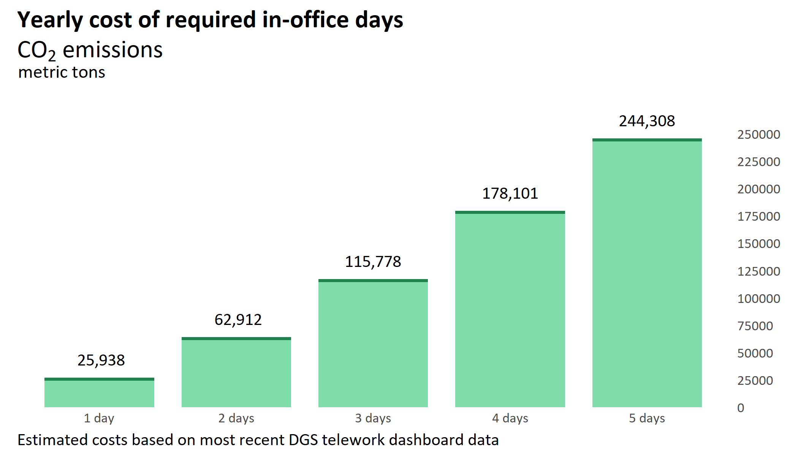

His reasons are his own, and we can only speculate as to what they are. All we can say for sure is that the Governor has set an arbitrary policy that will add thousands of additional cars to California's roadways.
As of November of 2023, 37% of state employees work primarily from home.1 Gavin's return-to-office mandate will force an estimated 90,000 state workers on the roads throughout California; that means we can expect over 30,000 more cars in Sacramento and over 7,000 in Los Angeles during peak commuting hours.2
Over the last 2.25 years, state telework policies have prevented nearly 400,000 metric tons of carbon from being released into the atmosphere from daily commutes.5
Based on the most recent month of Department of General Services' Tracking Telework data, the Governor's mandate for state workers to report to office locations at least 2 days per week is estimated to create a minimum of about 63,000 metric tons of carbon dioxide emissions over the course of a year.

Figure 1. Estimated CO2 emissions in metric tons over the course of one year (y-axis) for each number of mandated days state workers are required to report onsite (x-axis).
Should the 2 day mandate represent the start of a return to the pre-pandemic standard of 5 days in the office per week, the estimated CO2 emitted as a result of the policy could near 250 million metric tons.
Given the urgency of the climate emergency, we need to take as many measures as possible to prevent catastrophic climate change. Telework is one of many necessary tools in our toolkit to ward off climate change. California can't afford RTO.
Putting more cars on the road creates traffic, resulting in longer commute times.6 Gavin may love traffic, but more time spent in traffic means more exposure to hazardous pollutants: longer commute times are linked to higher individual dosage of chemicals identified as harmful in Proposition 65, such as benzene and formaldehyde.7
In addition to creating traffic, more cars on the road means there are more opportunities for collisions.8 Preventable deaths due to road injury have gone up in California over the past two decades,9 and there are motor vehicle crash hotspots near state office locations in Sacramento.10California can't afford RTO.
Absent an operational reason to take 100% telework off the table for state employees, we can only assume that Gavin must love traffic, pollution, carbon emissions, and wasting everyone's time and money—or, at least, he must care more about making traffic worse than he does about meeting California's ambitious climate goals.
Gavin, please reconsider. Traffic will never love you back.
Elvik, R., Erke, A., & Christensen, P. (2009). Elementary units of exposure. Transportation Research Record: Journal of the Transportation Research Board, No. 2103. Transportation Research Board of the National Academics: Washington, DC.